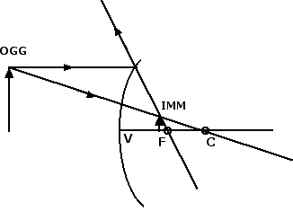

Riflessione e specchi
Formula dei punti coniugati
Nella sezione precedente abbiamo analizzato dove si formano le immagini in uno specchio sferico concavo. La posizione e la natura dell'immagine dipendono in maniera cruciale dalla posizione in cui si trova l'oggetto. Se invece prendiamo uno specchio convesso è facile rendersi conto che l'immagine risulta essere sempre un'immagine virtuale, rimpicciolita e diritta:

Esiste una formula importante che permette di capire dove si viene a formare l'immagine prodotta da uno specchio curvo. Indichiamo con p la distanza dell'oggetto dal vertice V, con q la distanza dell'immagine dal vertice V e con f la distanza focale, ossia la distanza del fuoco F dal vertice V. Allora per specchi di piccola apertura vale la seguente formula dei punti coniugati: 1 / p + 1 / q = 1 / f.
Affinché questa formula valga sia per gli specchi concavi che per gli specchi convessi è necessario stabilire la seguente convenzione: è positiva la distanza di tutto ciò che sta davanti allo specchio, è negativa la distanza di tutto ciò che sta dietro lo specchio. In base a questa convenzione la distanza p è sempre positiva, q > 0 se l'immagine è reale, q < 0 se l'immagine è virtuale, la distanza focale f > 0 per lo specchio concavo, mentre f < 0 per lo specchio convesso.
In genere la distanza focale f è una quantità che viene fornita dal costruttore dello specchio, la distanza p dell'oggetto dal vertice può essere invece facilmente misurata. La formula dei punti coniugati viene perciò utilizzata in genere per calcolare a quale distanza q dal vertice si viene a formare l'immagine. Avremo: 1 / q = 1 / f - 1 / p = (p - f ) / (f · p) da cui otteniamo che q = f · p / (p - f). Nel caso dello specchio convesso f è un numero negativo e questo fa sì che q < 0, qualunque sia la posizione in cui collochiamo l'oggetto: l'immagine è sempre virtuale. Nel caso dello specchio concavo, in cui f > 0, abbiamo invece che l'immagine è virtuale (q < 0) solo quando p < f, ossia quando l'oggetto viene posto tra il vertice V e il fuoco F.
Per concludere questa sezione vogliamo fare alcune considerazioni: prima di tutto notiamo come la formula 1 / p + 1 / q = 1 / f sia simmetrica per scambio di p e q. Questo significa che se l'immagine di un oggetto posto a una distanza p dal vertice si viene a formare a una distanza q dal vertice, quando mettiamo l'oggetto a una distanza q dal vertice la sua immagine si formerà alla distanza p dal vertice alla quale avevamo posto inizialmente l'oggetto. Per questa ragione i punti a distanza p e q si dicono coniugati e la formula prende il nome di legge dei punti coniugati.
È possibile definire il fattore di ingrandimento G come il rapporto tra le dimensioni dell'immagine e quelle dell'oggetto: G = himm / hogg. Tale fattore d'ingrandimento può essere riscritto in termini delle distanze p e q come G = q / p. La conoscenza delle distanze q e p è quindi sufficiente per determinare di quanto viene ingrandito o rimpicciolito l'oggetto posto davanti allo specchio.